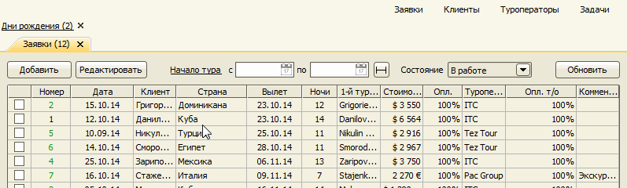
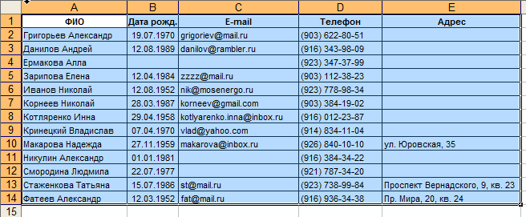
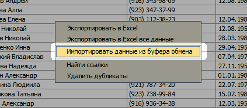
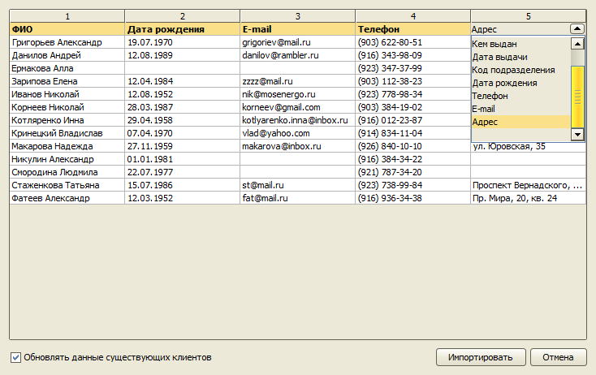

Клиенты
Программа позволяет хранить данные клиентов, осуществлять поиск по фамилии, телефону и e-mail, группировать клиентов по разным признакам.
Справочник клиентов
Главное меню → Справочники → Клиенты
Таблица клиентов может быть отфильтрована по фамилии, номеру телефона, e-mail и по группе.

Карточка клиента
Карточка клиента содержит следующие данные:
- ФИО клиента,
- статус,
- контактная информация,
- паспортные данные,
- история общения с клиентом,
- следующий контакт,
- подбор тура,
-

Дни рождения
Программа автоматически проверяет, у каких клиентов дни рождения на этой недели, и выводит соответствующее сообщение, если найдет таких клиентов.
При нажатии на ссылку данного сообщения выводится список клиентов с контактной информацией и справкой о заказанных ранее турах. Двойным кликом открывается список всех заявок клиента.

Импорт данных
Если у вас есть база клиентов в Excel или Access, вы можете импортировать ее в программу. Для этого скопируйте таблицу в буфер обмена.

Откройте справочник клиентов и вызовите контекстное меню, кликнув правой кнопкой мыши на таблице, и выберите пункт "Импортировать данные из буфера обмена".

Откроется предпросмотр импортируемых данных. В первой строке можно выбрать (или исправить) тип данных, находящихся в данном столбце.

Нажмите кнопку Импортировать. Данные будут добавлены в справочник. Если клиент с таким ФИО (и датой рождения, если указана) уже существует в базе, его данные будут обновлены.
Остались вопросы? Напишите нам на e-mail